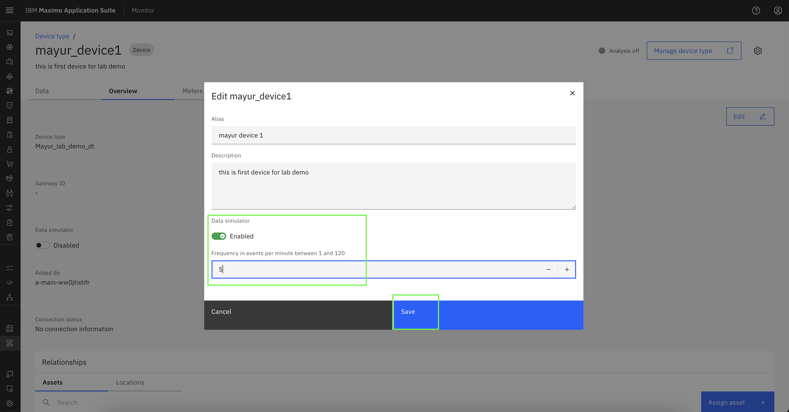

Objectives
In this Exercise you will learn how to add/edit devices in device type.
Before you begin:
This Exercise requires that you have:
- completed the pre-requisites required for all labs
- completed the previous exercises
Add Device
There are two ways to add device :
We can add Device in Device Types navigation.
We can create Device through Devices Navigation.
Click on Add Device + button.

It will show device creation through device library or custom device.Select add custom device and click Continue.

It will redirect to Add Device page where device Id and token type is required.Token type can be auto-generated or custom.Also need to mention Device Type name and click Save.
Note
The device type will not be pre-populated when creating a device via the Devices navigation. If it is not automatically selected, please choose the appropriate device type from the dropdown menu.
Device will be available in specified Device Type.

Add Second Device
Follow the steps outlined above to add a second device to the device type. Once completed, the configuration will appear as shown below.

Edit Device
Click on the device that you wish to edit.
Go on Overview page of device.
It will provide device details and its relationship with asset and location. Click on Edit.
We can edit device alias, description and also enable data simulator through edit option in Overview.Finally, click Save to modify data for the device.
Device alias and description successfully updated.

Data Simulation
Note
Using Data simulator we receive simulated data to the device.
Go on Overview page of device. Click on Edit.

Toggle the 'Data Simulator' switch to enable it. Then, specify the frequency by entering the desired number of events per minute. 
Data Simulation is Enabled now for this device.
The simulated event payload will appear under the 'Recent Events' section.
View Metric data
Navigate to the Data page of the device. Click the arrow next to Metric to expand the list.
Select the metric name for which you want to view data. Click on the Data Table to display the metric data.
Data is available for multiple metrics and can be reviewed individually.

View Dimension data
Navigate to the Data page of the device. Click the arrow next to Dimension to expand the list.
Select the dimension name for which you want to view data.


Alternatively, you can navigate to the device's Dimension page to view dimension data.

Edit Device Dimension
Navigate to the Dimension page of the device. Click on Edit icon.

The default value displayed here reflects the dimension value configured at the device type level. To update it, modify the dimension value as needed and click the Save button to apply the changes.

The dimension details have been successfully updated for this device.
Since we modified the dimension data for Device 1, its current values differ from those originally configured at the device type level. In contrast, Device 2 still reflects the default values, as no changes have been made to its dimension data.

Congratulations you have successfully added and modified devices in device type.